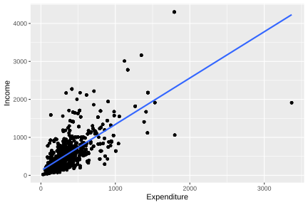

5.3 Estimation of model parameters
For fitting regression models with household surveys, advanced inferential methodologies have been developed that integrate sources of uncertainty within a single analytical framework, seeking to reflect both the structure of the design and the assumptions and limitations of the model. Among the most relevant approaches are pseudo-likelihood (Molina & Skinner, 1992) and combined inference (Binder, 2011).
The pseudo-likelihood method extends traditional maximum likelihood techniques to adapt them to the particularities of complex sampling designs. In this approach, the sampling distribution defined by the design plays a central role, while the model distribution moves into the background. Although in contexts of well-specified models pseudo-likelihood-based estimators tend to be unbiased or consistent, their main virtue lies in avoiding the biases that would arise from ignoring the sampling design. In practical terms, this method translates the traditional model into one that respects the way in which the data were obtained, ensuring more robust inferences.
By contrast, combined inference proposes a unified framework in which sampling variability and model uncertainty are integrated simultaneously. By considering both sources, this approach offers a more complete view of total variability and makes it possible to obtain more precise and reliable estimates. Its main contribution lies in avoiding the biases that can arise when the analysis is carried out exclusively from either the design or the model perspective. Thus, combined inference is especially useful in applications where population representativeness and the statistical robustness of the fitted models must be balanced.
When estimating the parameters of a linear regression model from a sample with a complex design, the standard approach changes. Consequently, traditional estimators, such as those obtained by maximum likelihood or least squares, may be biased and produce unreliable standard errors. In response to this situation, Wolter & Wolter (2007) proposes the use of robust nonparametric methods, such as Taylor linearization or bootstrap, to estimate variances and obtain valid inferences.
In the case of a simple linear regression model, the estimation of \(\beta_1\) under a complex sampling scheme is carried out using a weighted estimator, which can be expressed as follows:
\[ \hat{\beta_{1}} = \frac{\sum_{h} \sum_{i} \sum_{k} w_{hik}\,(y_{hik}-\hat{\bar{y}})(x_{hik}-\hat{\bar{x}})} {\sum_{h} \sum_{i} \sum_{k} w_{hik}\,(x_{hik}-\hat{\bar{x}})^{2}} = \frac{\hat{t}_{xy}}{\hat{t}_{xx}} \]
Here, \(\hat{\bar{y}}=\hat{t}_y/\hat{N}\) and \(\hat{\bar{x}}=\hat{t}_x/\hat{N}\) correspond to the estimated means of the study and auxiliary variables, respectively, while \(w_{hik}\) represents the sampling weights associated with each observation unit. This formulation explicitly incorporates these weights, making it possible to account for unequal probabilities of selection and the specific characteristics of the sampling design. Likewise, the estimated variance of \(\hat{\beta}_1\) can be approximated as:
\[ \widehat{Var}\left(\hat{\beta_{1}}\right) \approx \frac{\widehat{Var}(\hat{t}_{xy})+\hat{\beta}_{1}^{2}\widehat{Var}(\hat{t}_{xx})-2\hat{\beta}_{1}\widehat{Cov}(\hat{t}_{xy},\hat{t}_{xx})}{(\hat{t}_{xx})^{2}} \]
If \(\hat{\beta}_{1}\) corresponds to the slope estimator in a weighted simple linear regression model, then the intercept estimator \(\hat{\beta}_{0}\) is given by
\[ \hat{\beta}_{0} = \hat{\bar{y}} - \hat{\beta}_{1}\hat{\bar{x}} \]
Note that the variance of \(\hat{\beta}_{0}\) depends simultaneously on the estimators \(\hat{\bar{y}}\), \(\hat{\bar{x}}\), and \(\hat{\beta}_{1}\). For this reason, its approximation can be obtained using the properties of the variance of linear combinations of estimators, together with Taylor linearization techniques. From this procedure, the variance-covariance matrix of the model coefficients is derived, from which both the standard errors and the covariances associated with the parameter estimates are obtained.
In the case of multiple regression, if \(\hat{\boldsymbol{\beta}}\) represents the estimator of \(\boldsymbol{\beta}\), then the variance of each coefficient is estimated by considering its interdependence with the other parameters, which is reflected in the construction of a variance-covariance matrix that captures both individual variability and the covariances among all estimators. According to Kish & Frankel (1974), this calculation requires using weighted totals of squares and cross-products for all combinations between the dependent variable \(y\) and the set of predictors \(\mathbf{x} = (1, x_1, \ldots, x_p)\). In general terms:
\[ \widehat{Var}(\hat{\boldsymbol{\beta}}) = \hat{\boldsymbol\Sigma} = \begin{bmatrix} \widehat{Var}(\hat{\beta}_{0}) & \widehat{Cov}(\hat{\beta}_{0},\hat{\beta}_{1}) & \cdots & \widehat{Cov}(\hat{\beta}_{0},\hat{\beta}_{p}) \\ \widehat{Cov}(\hat{\beta}_{0},\hat{\beta}_{1}) & \widehat{Var}(\hat{\beta}_{1}) & \cdots & \widehat{Cov}(\hat{\beta}_{1},\hat{\beta}_{p}) \\ \vdots & \vdots & \ddots & \vdots \\ \widehat{Cov}(\hat{\beta}_{0},\hat{\beta}_{p}) & \widehat{Cov}(\hat{\beta}_{1},\hat{\beta}_{p}) & \cdots & \widehat{Var}(\hat{\beta}_{p}) \end{bmatrix} \]
This chapter shows how to implement these models in R using the survey package (Lumley, 2024), together with srvyr (Freedman Ellis & Schneider, 2024) and tidyverse (Wickham, Averick, et al., 2026) to organize the workflow. It covers specification of the sampling design, estimation of linear and logistic models, and the calculation of standard errors and design-adjusted hypothesis tests, integrating theoretical foundations with reproducible practical examples. To illustrate the concepts developed up to this point, the same database used throughout the book will be used. The process begins by loading the packages, the data, and defining the sampling design:
library(survey)
library(srvyr)
library(tidyverse)
data(BigCity, package = "TeachingSampling")
survey_data <- readRDS("Data/encuesta.rds")
survey_design <- survey_data %>%
as_survey_design(
strata = Stratum,
ids = PSU,
weights = wk,
nest = TRUE
)The examples developed throughout this chapter will use the same subgroups considered in the previous chapters.
urban_subset <- survey_design %>%
filter(Zone == "Urban")
rural_subset <- survey_design %>%
filter(Zone == "Rural")
female_subset <- survey_design %>%
filter(Sex == "Female")
male_subset <- survey_design %>%
filter(Sex == "Male")In order to fit a regression model between the income and expenditure variables, it is useful first to explore the relationship between them. For this purpose, a scatter plot is constructed with ggplot2, which makes it possible to visually assess the shape and strength of the association. The result is presented in Figure 5.1.
unweighted_plot <- ggplot(
data = survey_data,
aes(x = Expenditure, y = Income)
) +
geom_point() +
geom_smooth(method = "lm", se = FALSE)
unweighted_plot
Figure 5.1: Scatter plot between expenditure and income in the sample (unweighted)
The sample data preserve an approximately linear relationship between income and expenditure, although greater dispersion is observed among the values corresponding to households with higher expenditure levels. Once the graphical exploration of the data has been completed, the linear regression models are fitted.
To fit models incorporating the expansion factors, the svyglm function from the survey package is used; this function makes it possible to estimate linear models while explicitly incorporating the characteristics of the sampling design. In this case, the expression Income ~ Expenditure specifies that the variable Income is modeled as a function of the variable Expenditure; that is, a simple linear regression is fitted in which expenditure acts as the explanatory variable for income. The argument design = survey_design indicates that the model must use the previously defined sampling design object, while family = stats::gaussian() specifies that a linear model with a normal distribution is fitted, equivalent to a classical linear regression.
fit_svy <- svyglm(
Income ~ Expenditure + Zone + Sex,
design = survey_design,
family = stats::gaussian()
)
fit_svy## Stratified 1 - level Cluster Sampling design (with replacement)
## With (238) clusters.
## Called via srvyr
## Sampling variables:
## - ids: PSU
## - strata: Stratum
## - weights: wk
##
## Call: svyglm(formula = Income ~ Expenditure + Zone + Sex, design = survey_design,
## family = stats::gaussian())
##
## Coefficients:
## (Intercept) Expenditure ZoneUrban SexMale
## 73.58 1.22 66.65 20.64
##
## Degrees of Freedom: 2604 Total (i.e. Null); 116 Residual
## Null Deviance: 635000000
## Residual Deviance: 309000000 AIC: 38300The output above corresponds to the fit of a linear regression model in which the variable Income is explained by the variables Expenditure, Zone, and Sex. The results indicate the existence of a positive relationship between income and expenditure, such that, holding the other variables constant, expected income increases by approximately 1.22 units for each additional unit of expenditure.
Likewise, systematic differences associated with the sociodemographic characteristics included in the model are evident: residing in an urban area is associated with an average increase of 66.65 units in income relative to the reference category, while being male is associated with an increase of 20.64 units compared with the base sex category. The estimated intercept, equal to 73.58, represents the expected income level for the model reference category (rural area and female sex) when expenditure is equal to zero.